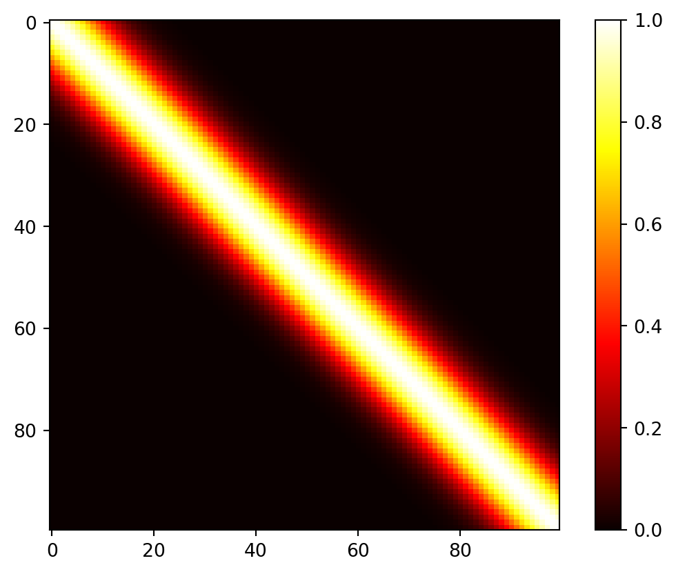
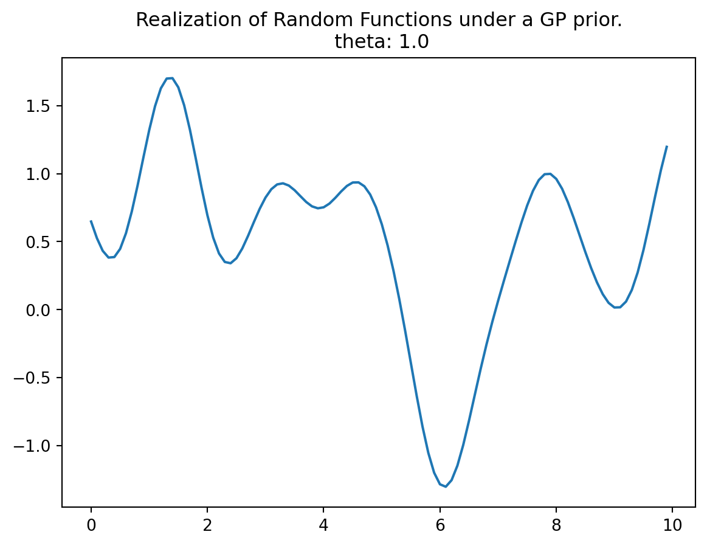
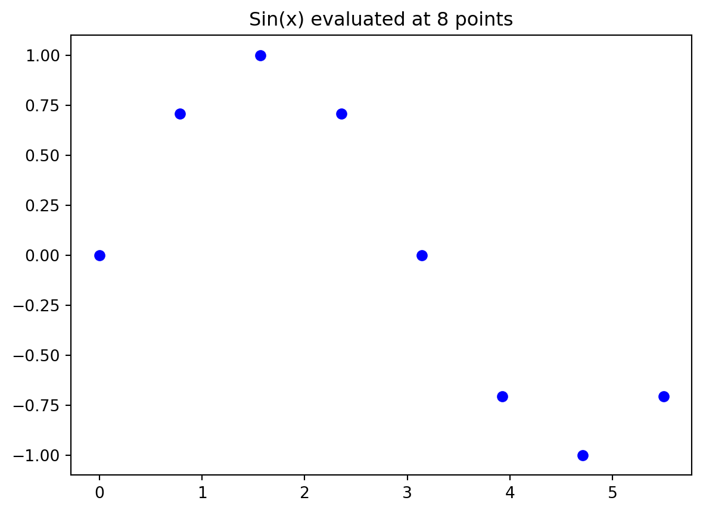
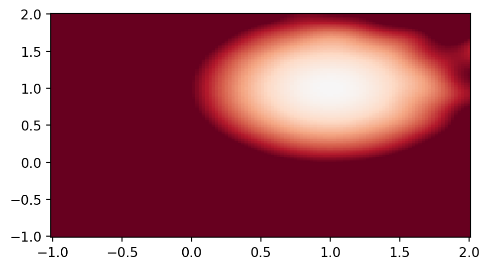
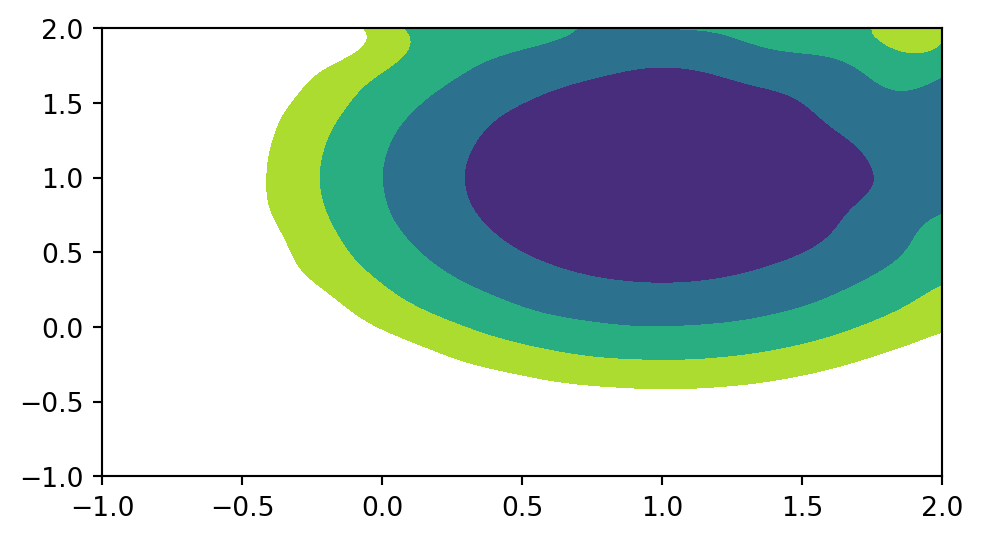

import numpy as np
n = 100
X = np.linspace(0, 10, n, endpoint=False).reshape(-1,1)6 Kriging (Gaussian Process Regression)
6.1 DACE and RSM
Mathematical models implemented in computer codes are used to circumvent the need for expensive field data collection. These models are particularly useful when dealing with highly nonlinear response surfaces, high signal-to-noise ratios (which often involve deterministic evaluations), and a global scope. As a result, a new approach is required in comparison to Response Surface Methodology (RSM).
With the improvement in computing power and simulation fidelity, researchers gain higher confidence and a better understanding of the dynamics in physical, biological, and social systems. However, the expansion of configuration spaces and increasing input dimensions necessitates more extensive designs. High-performance computing (HPC) allows for thousands of runs, whereas previously only tens were possible. This shift towards larger models and training data presents new computational challenges.
Research questions for DACE (Design and Analysis of Computer Experiments) include how to design computer experiments that make efficient use of computation and how to meta-model computer codes to save on simulation effort. The choice of surrogate model for computer codes significantly impacts the optimal experiment design, and the preferred model-design pairs can vary depending on the specific goal.
The combination of computer simulation, design, and modeling with field data from similar real-world experiments introduces a new category of computer model tuning problems. The ultimate goal is to automate these processes to the greatest extent possible, allowing for the deployment of HPC with minimal human intervention.
One of the remaining differences between RSM and DACE lies in how they handle noise. DACE employs replication, a technique that would not be used in a deterministic setting, to separate signal from noise. Traditional RSM is best suited for situations where a substantial proportion of the variability in the data is due to noise, and where the acquisition of data values can be severely limited. Consequently, RSM is better suited for a different class of problems, aligning with its intended purposes.
6.1.1 DACE Literature
- Two very good texts on computer experiments and surrogate modeling:
- The Design and Analysis of Computer Experiments, by Santner, Williams, and Notz (2018) is the canonical reference in the statistics literature
- Engineering Design via Surrogate Modeling by Forrester, Sobester, and Keane (2008) is perhaps more popular in engineering
- We will analyze an example from the latter.
6.2 Introduction to Gaussian Processes
The concept of GP (Gaussian Process) regression can be understood as a simple extension of linear modeling. It is worth noting that this approach goes by various names and acronyms, including “kriging,” a term derived from geostatistics, as introduced by Matheron in 1963. Additionally, it is referred to as Gaussian spatial modeling or a Gaussian stochastic process, and machine learning (ML) researchers often use the term Gaussian process regression (GPR). In all of these instances, the central focus is on regression. This involves training on both inputs and outputs, with the ultimate objective of making predictions and quantifying uncertainty (referred to as uncertainty quantification or UQ).
However, it’s important to emphasize that GPs are not a universal solution for every problem. Specialized tools may outperform GPs in specific, non-generic contexts, and GPs have their own set of limitations that need to be considered.
6.2.1 Gaussian Process Prior
In this context, any finite collection of realizations, which is represented by \(n\) observations, is modeled as having a multivariate normal (MVN) distribution. The characteristics of these realizations can be fully described by two key parameters:
- Their mean, denoted as an \(n\)-vector \(\mu\).
- The covariance matrix, denoted as an \(n \times n\) matrix \(\Sigma\). This covariance matrix encapsulates the relationships and variability between the individual realizations within the collection.
6.2.2 Covariance Function
The covariance function is defined by inverse exponentiated squared Euclidean distance: \[\Sigma(x, x') = \exp\{ - || x - x '||^2 \}.\]
Covariance decays exponentially fast as \(x\) and \(x'\) become farther apart. Observe that \[\Sigma(x,x) = 1\] and \[\Sigma(x, x') < 1\] for \(x \neq x'\) The function \(\Sigma(x,x')\) must be positive definite.
Positive definiteness in the context of the covariance matrix \(\Sigma_n\) is a fundamental requirement. It is determined by evaluating \(\Sigma(x_i, x_j)\) at pairs of \(n\) \(x\)-values, denoted as \(x_1, x_2, \ldots, x_n\). The condition for positive definiteness is that for all \(x\) vectors that are not equal to zero, the expression \(x^\top \Sigma_n x\) must be greater than zero. This property is essential when intending to use \(\Sigma_n\) as a covariance matrix in multivariate normal (MVN) analysis. It is analogous to the requirement in univariate Gaussian distributions where the variance parameter, \(\sigma^2\), must be positive.
Gaussian Processes (GPs) can be effectively utilized to generate random data that follows a smooth functional relationship. The process involves the following steps:
- Select a set of \(x\)-values, denoted as \(x_1, x_2, \ldots, x_n\).
- Define the covariance matrix \(\Sigma_n\) by evaluating \(\Sigma_n^{ij} = \Sigma(x_i, x_j)\) for \(i, j = 1, 2, \ldots, n\).
- Generate an \(n\)-variate realization \(Y\) that follows a multivariate normal distribution with a mean of zero and a covariance matrix \(\Sigma_n\), expressed as \(Y \sim \mathcal{N}_n(0, \Sigma_n)\).
- Visualize the result by plotting it in the \(x\)-\(y\) plane.
6.2.3 Construction of the Covariance Matrix
Here is an one-dimensional example. The process begins by creating an input grid using \(x\)-values. This grid consists of 100 elements, providing the basis for further analysis and visualization.
In the context of this discussion, the construction of the covariance matrix, denoted as \(\Sigma_n\), relies on the concept of inverse exponentiated squared Euclidean distances. However, it’s important to note that a modification is introduced later in the process. Specifically, the diagonal of the covariance matrix is augmented with a small value, represented as “eps” or \(\epsilon\).
The reason for this augmentation is that while inverse exponentiated distances theoretically ensure the covariance matrix’s positive definiteness, in practical applications, the matrix can sometimes become numerically ill-conditioned. By adding a small value to the diagonal, such as \(\epsilon\), this ill-conditioning issue is mitigated. In this context, \(\epsilon\) is often referred to as “jitter.”
import numpy as np
from numpy import array, zeros, power, ones, exp, multiply, eye, linspace, mat, spacing, sqrt, arange, append, ravel
from numpy.linalg import cholesky, solve
from numpy.random import multivariate_normal
def build_Psi(X, theta):
n = X.shape[0]
k = X.shape[1]
D = zeros((k, n, n))
for l in range(k):
for i in range(n):
for j in range(i, n):
D[l, i, j] = theta[l]*(X[i,l] - X[j,l])**2
D = sum(D)
D = D + D.T
return exp(-D) theta = np.array([1.0])
Psi = build_Psi(X, theta)
np.round(Psi, 3)array([[1. , 0.99 , 0.961, ..., 0. , 0. , 0. ],
[0.99 , 1. , 0.99 , ..., 0. , 0. , 0. ],
[0.961, 0.99 , 1. , ..., 0. , 0. , 0. ],
...,
[0. , 0. , 0. , ..., 1. , 0.99 , 0.961],
[0. , 0. , 0. , ..., 0.99 , 1. , 0.99 ],
[0. , 0. , 0. , ..., 0.961, 0.99 , 1. ]])import matplotlib.pyplot as plt
plt.imshow(Psi, cmap='hot', interpolation='nearest')
plt.colorbar()
plt.show()
6.2.4 Generation of Random Samples and Plotting the Realizations of the Random Function
In the context of the multivariate normal distribution, the next step is to utilize the previously constructed covariance matrix denoted as Psi. It is used as an essential component in generating random samples from the multivariate normal distribution.
The function multivariate_normal is employed for this purpose. It serves as a random number generator specifically designed for the multivariate normal distribution. In this case, the mean of the distribution is set equal to mean, and the covariance matrix is provided as Psi. The argument size specifies the number of realizations, which, in this specific scenario, is set to one.
By default, the mean vector is initialized to zero. To match the number of samples, which is equivalent to the number of rows in the X and Psi matrices, the argument zeros(n) is used, where n represents the number of samples.
Y = multivariate_normal(zeros(Psi.shape[0]), Psi, size = 1).reshape(-1,1)
Y.shape(100, 1)Now we can plot the results, i.e., a finite realization of the random function \(Y()\) under a GP prior with a particular covariance structure. We will plot those X and Y pairs as connected points on an \(x\)-\(y\) plane.
import matplotlib.pyplot as plt
plt.plot(X, Y)
plt.title("Realization of Random Functions under a GP prior.\n theta: {}".format(theta[0]))
plt.show()
6.2.5 Properties of the 1d Example
6.2.5.1 Several Bumps:
In this analysis, we observe several bumps in the \(x\)-range of \([0,10]\). These bumps in the function occur because shorter distances exhibit high correlation, while longer distances tend to be essentially uncorrelated. This leads to variations in the function’s behavior.
6.2.5.2 Smoothness:
The function plotted in the above figure represents only a finite realization, which means that we have data for a limited number of pairs, specifically 100 points. These points appear smooth in a tactile sense because they are closely spaced, and the plot function connects the dots with lines to create the appearance of smoothness. The complete surface, which can be conceptually extended to an infinite realization over a compact domain, is exceptionally smooth in a calculus sense due to the covariance function’s property of being infinitely differentiable.
6.2.5.3 Scale of Two:
Regarding the scale of the \(Y\) values, they have a range of approximately \([-2,2]\), with a 95% probability of falling within this range. This range is influenced by the scale of the covariance, which is set to 1, without considering the small value, \(\epsilon\), added to the diagonal. In standard statistical terms, 95% of the data points typically fall within two standard deviations of the mean, which is a common measure of the spread or range of data.
6.3 Background: Expectation, Mean
The distribution of a random vector is characterized by some indexes. One of them is the expected value, which is defined as \[ E[X] = \sum_{x \in D_X} xp_X(x) \qquad \text{if $X$ is discrete} \] \[ E[X] = \int\limits_{x \in D_X} xf_X(x)\mathrm{d}x \quad \text{if $X$ is continuous.} \]
The mean, \(\mu\), of a probability distribution is a measure of its central tendency or location. That is, \(E(X)\) is defined as the average of all possible values of \(X\), weighted by their probabilities.
6.3.1 Example
Let \(X\) denote the number produced by rolling a fair die. Then \[ E(X) = 1 \times 1/6 + 2 \times 1/6 + 3 \times 1/6 + 4 \times 1/6 + 5 \times 1/6 + 6\times 1/6 = 3.5 \]
6.3.2 Sample Mean
The sample mean is an important estimate of the population mean. The sample mean of a sample \(\{x_i\}\) (\(i=1,2,\ldots,n\)) is defined as \[\overline{x} = \frac{1}{n} \sum_i x_i.\]
6.3.3 Variance and Standard Deviation
If we are trying to predict the value of a random variable \(X\) by its mean \(\mu = E(X)\), the error will be \(X-\mu\). In many situations it is useful to have an idea how large this deviation or error is. Since \(E(X-\mu) = E(X) -\mu = 0\), it is necessary to use the absolute value or the square of (\(X-\mu\)). The squared error is the first choice, because the derivatives are easier to calculate. These considerations motivate the definition of the variance:
The variance of a random variable \(X\) is the mean squared deviation of \(X\) from its expected value \(\mu = E(X)\). \[\begin{equation} Var(X) = E[ (X-\mu)^2]. \end{equation}\]
6.3.4 Standard Deviation
Taking the square root of the variance to get back to the same scale of units as \(X\) gives the standard deviation. The standard deviation of \(X\) is the square root of the variance of \(X\). \[\begin{equation} sd(X) = \sqrt{Var(X)}. \end{equation}\]
6.3.5 Calculation of the Standard Deviation with Python
The function numpy.std returns the standard deviation, a measure of the spread of a distribution, of the array elements. The standard deviation is computed for the flattened array by default, otherwise over the specified axis. The argument ddof specifies the Delta Degrees of Freedom. The divisor used in calculations is N - ddof, where N represents the number of elements. By default ddof is zero, i.e., std uses the formula \[\begin{equation} \sqrt{ \frac{1}{N} \sum_i \left( x_i - \bar{x} \right)^2 } \qquad \text{with } \quad \bar{x} = \sum_{i=1}^N x_i /N. \end{equation}\]
If no axis is specified, std uses the flattened array (which is the default.) Since \(\bar{x} = 2\), the following value is computed: \[ \sqrt{1/3 \times \left( (1-2)^2 + (2-2)^2 + (3-2)^2 \right)} = \sqrt{2/3}.\]
import numpy as np
a = np.array([[1, 2, 3]])
np.std(a)0.816496580927726np.std(a, axis = 0)array([0., 0., 0.])The empirical standard deviation (which uses N-1), \(\sqrt{1/2 \times \left( (1-2)^2 + (2-2)^2 + (3-2)^2 \right)} = \sqrt{2/2}\), can be calculated as follows:
np.std(a, ddof=1)1.0np.std(a, axis = 1)array([0.81649658])A = np.array([[1, 2], [3, 4]])
Aarray([[1, 2],
[3, 4]])np.std(A)1.118033988749895np.std(A, axis=0)array([1., 1.])np.std(A, axis=1)array([0.5, 0.5])6.3.6 Single Versus Double Precision
In single precision, std() can be inaccurate:
a = np.zeros((2, 4*4), dtype=np.float32)a[0, :] = 1.0
a[1, :] = 0.1
a array([[1. , 1. , 1. , 1. , 1. , 1. , 1. , 1. , 1. , 1. , 1. , 1. , 1. ,
1. , 1. , 1. ],
[0.1, 0.1, 0.1, 0.1, 0.1, 0.1, 0.1, 0.1, 0.1, 0.1, 0.1, 0.1, 0.1,
0.1, 0.1, 0.1]], dtype=float32)np.std(a)0.45000002Computing the standard deviation in float64 is more accurate (result may vary):
np.std(a, dtype=np.float64)0.449999999254941946.3.7 Visualization of the Standard Deviation
The standard deviation of normal distributed can be visualized in terms of the histogram of \(X\):
- about 68% of the values will lie in the interval within one standard deviation of the mean
- 95% lie within two standard deviation of the mean
- and 99.9% lie within 3 standard deviations of the mean.
import matplotlib
import numpy as np
import matplotlib.pyplot as plt
np.random.seed(1)
# example data
mu = 0.0 # mean of distribution
sigma = 1 # standard deviation of distribution
x = mu + sigma * np.random.randn(2000)
num_bins = 33
fig, ax = plt.subplots()
# the histogram of the data
n, bins, patches = ax.hist(x, num_bins, density=1)
# add a 'best fit' line
y = ((1 / (np.sqrt(2 * np.pi) * sigma)) *
np.exp(-0.5 * (1 / sigma * (bins - mu))**2))
ax.plot(bins, y, '--')
ax.set_xlabel('x')
ax.set_ylabel('Probability density')
ax.set_title(r'Histogram: $\mu=0$, $\sigma=1$')
ax.vlines(-1, ymin=0, ymax = ((1 / (np.sqrt(2 * np.pi) * sigma)) *
np.exp(-0.5 * (1 / sigma * (-1.0 - mu))**2)), colors="orange", linestyles="-.")
ax.vlines(1, ymin=0, ymax = ((1 / (np.sqrt(2 * np.pi) * sigma)) *
np.exp(-0.5 * (1 / sigma * (1.0 - mu))**2)), colors="orange", linestyles="-.")
# Tweak spacing to prevent clipping of ylabel
fig.tight_layout()
plt.show()
6.4 Standardization
To compare statistical properties of random variables which use different units, it is a common practice to transform these random variables into standardized variables. If a random variable \(X\) has expectation \(E(X) = \mu\) and standard deviation \(sd(X) = \sigma >0\), the random variable \[ X^{\ast} = (X-\mu)/\sigma \] is called \(X\) in standard units. It has \(E(X^{\ast}) = 0\) and \(sd(X^{\ast}) =1\).
6.5 Random Numbers in Python
Results from computers are deterministic, so it sounds like a contradiction in terms to generate random numbers on a computer. Standard computers generate pseudo-randomnumbers, i.e., numbers that behave as if they were drawn randomly. To generate ten random numbers from a normal distribution, the following command can be used.
import numpy as np
rng = np.random.default_rng()
n = 10
mu, sigma = 2, 0.1
x = rng.normal(mu, sigma, n)Verify the mean:
abs(mu - np.mean(x))0.032818214523422595Note: To verify the standard deviation, we use ddof = 1 (empirical standard deviation):
abs(sigma - np.std(x, ddof=1))0.0127063114553756246.6 The Multivariate Normal Distribution
The multivariate normal, multinormal, or Gaussian distribution serves as a generalization of the one-dimensional normal distribution to higher dimensions. To fully define this distribution, it is necessary to specify its mean and covariance matrix. These parameters are analogous to the mean, which represents the central location, and the variance (squared standard deviation) of the one-dimensional normal distribution.
In the context of the multivariate normal distribution, the mean takes the form of a coordinate within an n-dimensional space. This coordinate represents the location where samples are most likely to be generated, akin to the peak of the bell curve in a one-dimensional or univariate normal distribution.
On the other hand, the covariance within the multivariate normal distribution denotes the extent to which two variables vary together. When drawing n-dimensional samples from this distribution, it results in a set of values represented as \(X = [x_1, x_2, \ldots, x_n]\). The elements of the covariance matrix, such as \(C_{ij}\), represent the covariances between the variables \(x_i\) and \(x_j\). These covariances describe how the different variables in the distribution are related to each other in terms of their variability.
import numpy as np
rng = np.random.default_rng()
import matplotlib.pyplot as plt
mean = [0, 0]
cov = [[9, 0], [0, 4]] # diagonal covariance
x, y = rng.multivariate_normal(mean, cov, 1000).T
plt.plot(x, y, 'x')
plt.axis('equal')
plt.grid()
plt.title("Bivariate Normal. Mean zero and covariance: {}".format(cov))
plt.show()
6.7 Kriging
6.7.1 The Kriging Covariance Matrix
- Basis functions of the form \[\begin{equation} \psi^{(i)} = \exp \left( - \sum_{l=1}^k \theta_l | x_{l}^{(i)} - x_{l} | ^{p_l} \right) \end{equation}\] are used in a method known as Kriging.
- Although the Kriging basis function is related to the Gaussian basis function, there are some differences:
- Where the Gaussian basis function has \(1/\sigma^2\), the Kriging basis has a vector \(\theta = [\theta_1, \theta_2, \ldots, \theta_k]^T\).
- The \(\theta\) vector allows the width of the basis function to vary from dimension to dimension.
- In the Gaussian basis function, the exponent is fixed at 2, Kriging allows this exponent to vary (typically from 1 to 2).
6.7.2 Building the Kriging Model
- Consider a set of \(k\)-dimensional sample data \[X = [x_1, x_2, \ldots, x_n],\] i.e., \(X\) is a \((n,k)\)-matrix, with related responses \[y = [y_1, y_2, \ldots, y_n].\]
- We are interested in finding an expression for the predicted value at a new point \(x\).
- We are going to interpret the observed responses as if they are generated by a stochastic process, which will be denoted as follows: \[\begin{equation} Y = [Y(x_1), \ldots, Y(x_n) ]^T. \end{equation}\]
- The random process has a mean of \(\mu\) (which is a (n,1)-dimensional vector). The random variables are correlated with each other using the basis function expression \[\begin{equation} \text{cor} [Y(x_i), Y(x_j)] = \exp \left( - \sum_{l=1}^k \theta_l | x_{il} - x_{jl} | ^{p_l} \right). \end{equation}\]
- From this, the \((n,n)\) correlation matrix \(\Psi\) of the observed data can be computed: \[\begin{equation} \Psi = \begin{pmatrix} \text{cor} [Y(x_1), Y(x_1)] & \ldots & \text{cor} [Y(x_1), Y(x_n)] \\ \vdots & \ddots & \vdots \\ \text{cor} [Y(x_n), Y(x_1)] & \ldots & \text{cor} [Y(x_n), Y(x_n)] \end{pmatrix} .\end{equation}\]
6.7.3 Example: Correlation Matrix
Let \(n=4\) and \(k=3\). The sample plan is represented by the following matrix \(X\): \[X = \begin{pmatrix} x_{11} & x_{12} & x_{13}\\ x_{21} & x_{22} & x_{23}\\ x_{31} & x_{32} & x_{33}\\ x_{41} & x_{42} & x_{43}\\ \end{pmatrix}\]
To compute the elements of the matrix \(\Psi\), the following \(k\) \((n,n)\)-matrices have to be computed: \[ D_1 = \begin{pmatrix} x_{11} - x_{11} & x_{11} - x_{21} & x_{11} -x_{31} & x_{11} - x_{41} \\ x_{21} - x_{11} & x_{21} - x_{21} & x_{21} -x_{31} & x_{21} - x_{41} \\ x_{31} - x_{11} & x_{31} - x_{21} & x_{31} -x_{31} & x_{31} - x_{41} \\ x_{41} - x_{11} & x_{41} - x_{21} & x_{41} -x_{31} & x_{41} - x_{41} \\\end{pmatrix}\] \[ D_2 = \begin{pmatrix} x_{12} - x_{12} & x_{12} - x_{22} & x_{12} -x_{32} & x_{12} - x_{42} \\ x_{22} - x_{12} & x_{22} - x_{22} & x_{22} -x_{32} & x_{22} - x_{42} \\ x_{32} - x_{12} & x_{32} - x_{22} & x_{32} -x_{32} & x_{32} - x_{42} \\ x_{42} - x_{12} & x_{42} - x_{22} & x_{42} -x_{32} & x_{42} - x_{42} \\\end{pmatrix}\] \[ D_3 = \begin{pmatrix} x_{13} - x_{13} & x_{13} - x_{23} & x_{13} -x_{33} & x_{13} - x_{43} \\ x_{23} - x_{13} & x_{23} - x_{23} & x_{23} -x_{33} & x_{23} - x_{43} \\ x_{33} - x_{13} & x_{33} - x_{23} & x_{33} -x_{33} & x_{33} - x_{43} \\ x_{43} - x_{13} & x_{43} - x_{23} & x_{43} -x_{33} & x_{43} - x_{43} \\\end{pmatrix}\]
Since the matrices are symmetric and the main diagonals are zero, it is sufficient to compute the following matrices: \[D_1 = \begin{pmatrix} 0 & x_{11} - x_{21} & x_{11} -x_{31} & x_{11} - x_{41} \\ 0 & 0 & x_{21} -x_{31} & x_{21} - x_{41} \\ 0 & 0 & 0 & x_{31} - x_{41} \\ 0 & 0 & 0 & 0 \\\end{pmatrix}\] \[ D_2 = \begin{pmatrix} 0 & x_{12} - x_{22} & x_{12} -x_{32} & x_{12} - x_{42} \\ 0 & 0 & x_{22} -x_{32} & x_{22} - x_{42} \\ 0 & 0 & 0 & x_{32} - x_{42} \\ 0 & 0 & 0 & 0 \\\end{pmatrix}\] \[ D_3 = \begin{pmatrix} 0 & x_{13} - x_{23} & x_{13} -x_{33} & x_{13} - x_{43} \\ 0 & 0 & x_{23} -x_{33} & x_{23} - x_{43} \\ 0 & 0 & 0 & x_{33} - x_{43} \\ 0 & 0 & 0 & 0 \\\end{pmatrix}\]
We will consider \(p_l=2\).
The differences will be squared and multiplied by \(\theta_i\), i.e.: \[ D_1 = \theta_1 \begin{pmatrix} 0 & (x_{11} - x_{21})^2 & (x_{11} -x_{31})^2 & (x_{11} - x_{41})^2 \\ 0 & 0 & (x_{21} -x_{31})^2 & (x_{21} - x_{41})^2 \\ 0 & 0 & 0 & (x_{31} - x_{41})^2 \\ 0 & 0 & 0 & 0 \\\end{pmatrix}\] \[ D_2 = \theta_2 \begin{pmatrix} 0 & (x_{12} - x_{22})^2 & (x_{12} -x_{32})^2 & (x_{12} - x_{42})^2 \\ 0 & 0 & (x_{22} -x_{32})^2 & (x_{22} - x_{42})^2 \\ 0 & 0 & 0 & (x_{32} - x_{42})^2 \\ 0 & 0 & 0 & 0 \\\end{pmatrix}\] \[ D_3 = \theta_3 \begin{pmatrix} 0 & (x_{13} - x_{23})^2 & (x_{13} -x_{33})^2 & (x_{13} - x_{43})^2 \\ 0 & 0 & (x_{23} -x_{33})^2 & (x_{23} - x_{43})^2 \\ 0 & 0 & 0 & (x_{33} - x_{43})^2 \\ 0 & 0 & 0 & 0 \\\end{pmatrix}\]
The sum of the three matrices \(D=D_1+ D_2 + D_3\) will be calculated next: \[ \begin{pmatrix} 0 & \theta_1 (x_{11} - x_{21})^2 + \theta_2 (x_{12} - x_{22})^2 + \theta_3 (x_{13} - x_{23})^2 & \theta_1 (x_{11} -x_{31})^2 + \theta_2 (x_{12} -x_{32})^2 + \theta_3 (x_{13} -x_{33})^2 & \theta_1 (x_{11} - x_{41})^2 + \theta_2 (x_{12} - x_{42})^2 + \theta_3 (x_{13} - x_{43})^2 \\ 0 & 0 & \theta_1 (x_{21} -x_{31})^2 + \theta_2 (x_{22} -x_{32})^2 + \theta_3 (x_{23} -x_{33})^2 & \theta_1 x_{21} - x_{41})^2 + \theta_2 (x_{22} - x_{42})^2 + \theta_3 (x_{23} - x_{43})^2 \\ 0 & 0 & 0 & \theta_1 (x_{31} - x_{41})^2 + \theta_2 (x_{32} - x_{42})^2 + \theta_3 (x_{33} - x_{43})^2 \\ 0 & 0 & 0 & 0 \\\end{pmatrix}\]
Finally, \[ \Psi = \exp(-D)\] is computed.
Next, we will demonstrate how this computation can be implemented in Python.
from numpy import array, zeros, power, ones, exp, multiply, eye, linspace, mat, spacing, sqrt, arange, append, ravel
from numpy.linalg import cholesky, solve
theta = np.array([1,2,3])
X = np.array([ [1,0,0], [0,1,0], [0,0,1], [0,0,0]])
Xarray([[1, 0, 0],
[0, 1, 0],
[0, 0, 1],
[0, 0, 0]])def build_Psi(X, theta):
n = X.shape[0]
k = X.shape[1]
D = zeros((k, n, n))
for l in range(k):
for i in range(n):
for j in range(i, n):
D[l, i, j] = theta[l]*(X[i,l] - X[j,l])**2
D = sum(D)
D = D + D.T
return exp(-D) Psi = build_Psi(X, theta)
Psiarray([[1. , 0.04978707, 0.01831564, 0.36787944],
[0.04978707, 1. , 0.00673795, 0.13533528],
[0.01831564, 0.00673795, 1. , 0.04978707],
[0.36787944, 0.13533528, 0.04978707, 1. ]])- The same result can be obtained with existing python functions, e.g., from the package
scipy.- Note: A small value,
eps, can be passed to the functionbuild_Psito improve the condition number.
- Note: A small value,
from scipy.spatial.distance import squareform
from scipy.spatial.distance import pdist
def build_Psi(X, theta, eps=sqrt(spacing(1))):
return exp(- squareform(pdist(X, metric='sqeuclidean', out=None, w=theta))) + multiply(eye(X.shape[0]), eps)
Psi = build_Psi(X, theta, eps=.0)
Psiarray([[1. , 0.04978707, 0.01831564, 0.36787944],
[0.04978707, 1. , 0.00673795, 0.13533528],
[0.01831564, 0.00673795, 1. , 0.04978707],
[0.36787944, 0.13533528, 0.04978707, 1. ]])6.7.4 Generate sample from N(\(\mu\), \(\Psi\))
- The following block of code generates 5 draws from a bivariate normal distribution with zero mean and covariance matrix \(\Psi\).
- Because our input space is three dimensional, the results cannot be visualized in a simple way.
- The next examples will use a one-dimensional input space, so that our results can be easily visualized in 2d.
import numpy as np
from numpy.random import multivariate_normal
m = 5
rng = np.random.default_rng()
Y = multivariate_normal(zeros(Psi.shape[0]), Psi, size=m)7 Kriging in a Nutshell
- We will use the Kriging correlation \(\Psi\) to predict new values based on the observed data.
- The matrix algebra involved i calculating the likelihood is the most computationally intensive part of the Kriging process
- Care must be taken that the computer code is as efficient as possible.
- Basic elements of the Kriging based surrogate optimization such as interpolation, expected improvement, and regression are presented.
- The presentation follows the approach described in Forr08a and Bart21i.
7.0.1 The Kriging Model
Consider sample data \(\vec{X}\) and \(\vec{y}\) from \(n\) locations that are available in matrix form: \(\vec{X}\) is a \((n \times k)\) matrix, where \(k\) denotes the problem dimension and \(\vec{y}\) is a \((n\times 1)\) vector.
The observed responses \(\vec{y}\) are considered as if they are from a stochastic process, which will be denoted as \[\begin{equation*} \begin{pmatrix} \vec{Y}(\vec{x}^{(1)})\\ \vdots\\ \vec{Y}(\vec{x}^{(n)})\\ \end{pmatrix}. \end{equation*}\]
The set of random vectors (also referred to as a random field) has a mean of \(\vec{1} \mu\), which is a \((n\times 1)\) vector.
7.0.2 Correlations
The random vectors are correlated with each other using the basis function expression \[\text{cor} \left(\vec{Y}(\vec{x}^{(i)}),\vec{Y}(\vec{x}^{(l)}) \right) = \exp\left\{ - \sum_{j=1}^k \theta_j |x_j^{(i)} - x_j^{(l)} |^{p_j}\right\}.\]
The \((n \times n)\) correlation matrix of the observed sample data is \[\vec{\Psi} = \begin{pmatrix} \text{cor}\left( \vec{Y}(\vec{x}^{(i)}), \vec{Y}(\vec{x}^{(l)}) \right) & \ldots & \text{cor}\left( \vec{Y}(\vec{x}^{(i)}), \vec{Y}(\vec{x}^{(l)}) \right)\\ \vdots & \vdots & \vdots\\ \text{cor}\left( \vec{Y}(\vec{x}^{(i)}), \vec{Y}(\vec{x}^{(l)}) \right)& \ldots & \text{cor}\left( \vec{Y}(\vec{x}^{(i)}), \vec{Y}(\vec{x}^{(l)}) \right) \end{pmatrix}.\]
Note: correlations depend on the absolute distances between sample points \(|x_j^{(n)} - x_j^{(n)}|\) and the parameters \(p_j\) and \(\theta_j\).
Correlation is intuitive, because when two points move close together, then \(|x_l^{(i)} - x_l| \to 0\) and \(\exp(-|x_l^{(i)} - x_l| \to 1\), points show very close correlation and \(Y(x_l^{(i)}) = Y(x_l)\).
\(\theta\) can be seen as a width parameter:
- low \(\theta_j\) means that all points will have a high correlation, with \(Y(x_j)\) being similar across the sample
- high \(\theta_j\) means that there is a significant difference between the \(Y(x_j)\)’s
\(\theta_j\) is a measure of how active the function we are approximating is
High \(\theta_j\) indicate important parameters
7.0.3 MLE to estimate \(\theta\) and \(p\)
- We know what the correlations mean, but how do we estimate the values of \(\theta_j\) amd where does our observed data \(y\) come in?
- To estimate the values of \(\vec{\theta}\) and \(\vec{p}\), they are chosen to maximize the likelihood of \(\vec{y}\), which can be expressed in terms of the sample data \[L\left(\vec{Y}(\vec{x}^{(1)}), \ldots, \vec{Y}(\vec{x}^{(n)}) | \mu, \sigma \right) = \frac{1}{(2\pi \sigma)^{n/2} |\vec{\Psi}|^{1/2}} \exp\left\{ \frac{-(\vec{y} - \vec{1}\mu)^T \vec{\Psi}^{-1}(\vec{y} - \vec{1}\mu) }{2 \sigma^2}\right\},\] and formulated as the log-likelihood: \[\ln(L) = - \frac{n}{2} \ln(2\pi \sigma) - \frac{1}{2} \ln |\vec{\Psi}| \frac{-(\vec{y} - \vec{1}\mu)^T \vec{\Psi}^{-1}(\vec{y} - \vec{1}\mu) }{2 \sigma^2}.\]
- Optimization of the log-likelihood by taking derivatives with respect to \(\mu\) and \(\sigma\) results in \[\hat{\mu} = \frac{\vec{1}^T \vec{\Psi}^{-1} \vec{y}^T}{\vec{1}^T \vec{\Psi}^{-1} \vec{1}^T}\] and \[\hat{\sigma} = \frac{(\vec{y} - \vec{1}\mu)^T \vec{\Psi}^{-1}(\vec{y} - \vec{1}\mu)}{n}.\]
- Combining the equations leads to the concentrated log-likelihood: \[\ln(L) = - \frac{n}{2} \ln(\hat{\sigma}) - \frac{1}{2} \ln |\vec{\Psi}|.\]
- Note:
- The first term requires information about the measured point (observations) \(y_i\).
- To maximize \(\ln(L)\), optimal values of \(\vec{\theta}\) and \(\vec{p}\) are determined numerically, because the equation is not differentiable.
7.1 Tuning \(\theta\) and \(p\)
- Optimizers such as Nelder-Mead, Conjugate Gradient, or Simulated Annealing can be used to determine optimal values for \(\theta\) and \(p\).
- After the optimization, the correlation matrix is build with the optimized \(\theta\) and \(p\) values. This is best (most likely) Kriging model for the given data \(y\).
- We will skip the optimization step here and use \(\theta = 1\) and \(p=2\).
7.2 Kriging Prediction
Main idea for prediction:
- The new \(Y(x)\) should be consistent with the old sample data \(X\).
For a new prediction \(\hat{y}\) at \(\vec{x}\), the value of \(\hat{y}\) is chosen so that it maximizes the likelihood of the sample data \(\vec{X}\) and the prediction, given the (optimized) correlation parameter \(\vec{\theta}\) and \(\vec{p}\) from above.
The observed data \(\vec{y}\) is augmented with the new prediction \(\hat{y}\) which results in the augmented vector \(\vec{\tilde{y}} = ( \vec{y}^T, \hat{y})^T\).
A vector of correlations between the observed data and the new prediction is defined as \[\begin{equation*} \vec{\psi} = \begin{pmatrix} \text{cor}\left( \vec{Y}(\vec{x}^{(1)}), \vec{Y}(\vec{x}) \right) \\ \vdots \\ \text{cor}\left( \vec{Y}(\vec{x}^{(n)}), \vec{Y}(\vec{x}) \right) \end{pmatrix} = \begin{pmatrix} \vec{\psi}^{(1)}\\ \vdots\\ \vec{\psi}^{(n)} \end{pmatrix}. \end{equation*}\]
The augmented correlation matrix is constructed as \[\begin{equation*} \tilde{\vec{\Psi}} = \begin{pmatrix} \vec{\Psi} & \vec{\psi} \\ \vec{\psi}^T & 1 \end{pmatrix}. \end{equation*}\]
The log-likelihood of the augmented data is \[\ln(L) = - \frac{n}{2} \ln(2\pi) - \frac{n}{2} \ln(\hat{\sigma}^2) - \frac{1}{2} \ln |\vec{\hat{\Psi}}| - \frac{(\vec{\tilde{y}} - \vec{1}\hat{\mu})^T \vec{\tilde{\Psi}}^{-1}(\vec{\tilde{y}} - \vec{1}\hat{\mu})}{2 \hat{\sigma}^2}.\]
The MLE for \(\hat{y}\) can be calculated as \[\hat{y}(\vec{x}) = \hat{\mu} + \vec{\psi}^T \vec{\tilde{\Psi}}^{-1} (\vec{y} - \vec{1}\hat{\mu}).\]
7.2.1 Properties of the Predictor
- This Equation reveals two important properties of the Kriging predictor:
- Basis functions: The basis function impacts the vector \(\vec{\psi}\), which contains the \(n\) correlations between the new point \(\vec{x}\) and the observed locations. Values from the \(n\) basis functions are added to a mean base term \(\mu\) with weightings \(\vec{w} = \vec{\tilde{\Psi}}^{(-1)} (\vec{y} - \vec{1}\hat{\mu})\).
- Interpolation: The predictions interpolate the sample data. When calculating the prediction at the \(i\)th sample point, \(\vec{x}^{(i)}\), the \(i\)th column of \(\vec{\Psi}^{-1}\) is \(\vec{\psi}\), and \(\vec{\psi} \vec{\Psi}^{-1}\) is the \(i\)th unit vector. Hence, \(\hat{y}(\vec{x}^{(i)}) = y^{(i)}\).
7.3 Example: Sinusoid Function
- Toy example in 1d where the response is a simple sinusoid measured at eight equally spaced \(x\)-locations in the span of a single period of oscillation.
7.4 Calculating the Correlation Matrix \(\Psi\)
- The correlation matrix \(\Psi\) is based on the pairwise squared distances between the input locations
- Here we will use \(n=8\) sample locations
- \(\theta\) is set to 1.0
n = 8
X = np.linspace(0, 2*np.pi, n, endpoint=False).reshape(-1,1)
# theta should be an array (of one value, for the moment, will be changed later)
theta = np.array([1.0])
Psi = build_Psi(X, theta)- Evaluate at sample points
y = np.sin(X)import matplotlib.pyplot as plt
plt.plot(X, y, "bo")
plt.title("Sin(x) evaluated at {} points".format(n))
plt.show()
7.5 Computing the \(\psi\) Vector
7.5.1 Based on Distances Between Testing and Training Data Locations
- Distances between testing locations \(x\) and training data locations \(X\).
from scipy.spatial.distance import cdist
def build_psi(X, x, theta, eps=sqrt(spacing(1))):
n = X.shape[0]
k = X.shape[1]
m = x.shape[0]
psi = zeros((n, m))
theta = theta * ones(k)
D = zeros((n, m))
D = cdist(x.reshape(-1, k),
X.reshape(-1, k),
metric='sqeuclidean',
out=None,
w=theta)
print(D.shape)
psi = exp(-D)
# return psi transpose to be consistent with the literature
return(psi.T)- We would like to predict at \(m = 100\) new locations:
m = 100
x = np.linspace(0, 2*np.pi, m, endpoint=False).reshape(-1,1)
psi = build_psi(X, x, theta)(100, 8)7.6 Predictive Equations
U = cholesky(Psi).Tone = np.ones(n).reshape(-1,1)
mu = (one.T.dot(solve(U, solve(U.T, y)))) / one.T.dot(solve(U, solve(U.T, one)))f = mu * ones(m).reshape(-1,1) + psi.T.dot(solve(U, solve(U.T, y - one * mu)))import matplotlib.pyplot as plt
plt.plot(x, f, color = "orange", label="Fitted")
plt.plot(x, np.sin(x), color = "grey", label="Original")
plt.plot(X, y, "bo", label="Measurements")
plt.title("Kriging prediction of sin(x) with {} points.\n theta: {}".format(n, theta[0]))
plt.legend(loc='upper right')
plt.show()8 Exercises
8.1 1 Number of Sample Points
- The example uses \(n=8\) sample points to fit the sin function.
- What happens, if less than 8 samples are available?
8.2 2 Modified \(\theta\) values
- The example uses a \(\theta\) value of \(1.0\).
- What happens if \(\theta\) is modified?
- Can get better predictions with smaller or larger \(\theta\) values?
8.3 3 Prediction Interval
- The prediction interval was identical to the measurement interval, i.e., in the range from \(0\) to \(2\pi\). This is referred to as “interpolation”.
- What happens if this interval is increased (which is referred to as “extrapolation”)?
8.4 Exercise RBF
8.4.1 Package Loading
%matplotlib inline
import numpy as np
from numpy.matlib import eye
import scipy.linalg
from numpy import linalg as LA
from spotPython.design.spacefilling import spacefilling
from spotPython.fun.objectivefunctions import analytical
import matplotlib.pyplot as plt8.4.2 Define a small number
eps = np.sqrt(np.spacing(1))8.4.3 The Sampling Plan (X)
- We will use 256 points.
- The first 10 points are shown below.
gen = spacefilling(2)
rng = np.random.RandomState(1)
lower = np.array([-1,-1])
upper = np.array([2,2])
X = gen.scipy_lhd(256, lower=lower, upper = upper)
X[1:10]array([[ 0.67319891, -0.11153561],
[ 0.4979386 , -0.10717298],
[-0.9991017 , 1.66863389],
[-0.423669 , -0.97527218],
[-0.57241762, 1.77447307],
[ 1.34580967, 0.62640122],
[ 0.18662343, 0.18793039],
[ 1.7664757 , 1.65743858],
[ 0.98282275, 0.42361525]])8.4.4 The Objective Function
- Here we use \(\sum_{i=1}^n (x_i-1)^2\).
f_map()is a helper function that maps \(f\) to the entries (points) in the matrix \(X\).
def f(x):
return np.sum((x-1.0)**2)
def f_map(x):
return np.array(list(map(f, x)))y = f_map(X)
y[1:10]array([1.34231036, 1.47789766, 4.44347889, 5.9285336 , 3.07230572,
0.25916038, 1.32103849, 1.01971047, 0.33251443])- Alternatively, we can use pre-defined functions from the
pyspotpackage:
# fun = analytical(sigma=0).fun_branin
# fun = analytical(sigma=0).fun_sphereXX, YY = np.meshgrid(np.linspace(-1, 2, 128), np.linspace(-1, 2, 128))
zz = np.array([f_map(np.array([xi, yi]).reshape(-1,2)) for xi, yi in zip(np.ravel(XX), np.ravel(YY))]).reshape(128,128)fig, ax = plt.subplots(figsize=(5, 2.7), layout='constrained')
co = ax.pcolormesh(XX, YY, zz, vmin=-1, vmax=1, cmap='RdBu_r')
fig, ax = plt.subplots(figsize=(5, 2.7), layout='constrained')
co = ax.contourf(XX, YY, zz, levels=np.linspace(0,2, 10))8.4.5 The Gram Matrix
def build_Gram(X):
"""
Construction of the Gram matrix.
"""
n = X.shape[0]
G = np.zeros((n, n))
for i in range(n):
for j in range(i, n):
G[i, j] = np.linalg.norm(X[i] - X[j])
G = G + G.T
return GG = build_Gram(X)
np.round(G,2)array([[0. , 0.51, 0.57, ..., 0.99, 0.62, 1.39],
[0.51, 0. , 0.18, ..., 0.91, 0.94, 1.41],
[0.57, 0.18, 0. , ..., 0.75, 0.87, 1.26],
...,
[0.99, 0.91, 0.75, ..., 0. , 0.71, 0.52],
[0.62, 0.94, 0.87, ..., 0.71, 0. , 0.91],
[1.39, 1.41, 1.26, ..., 0.52, 0.91, 0. ]])8.4.6 The Radial Basis Functions
def basis_linear(r):
return r*r*rdef basis_gauss(r, sigma = 1e-1):
return np.exp(-r**2/sigma)- We select the Gaussian basis function for the following examples:
basis = basis_gauss8.4.7 The \(\Psi\) Matrix
def build_Phi(G, basis, eps=np.sqrt(np.spacing(1))):
n = G.shape[0]
Phi = np.zeros((n,n))
for i in range(n):
for j in range(n):
Phi[i,j] = basis(G[i,j])
Phi = Phi + np.multiply(np.mat(eye(n)), eps)
return PhiPhi = build_Phi(G, basis=basis)
Phi[0:3,0:3]matrix([[1.00000001, 0.07413611, 0.03828587],
[0.07413611, 1.00000001, 0.73539165],
[0.03828587, 0.73539165, 1.00000001]])8.4.8 Inverting \(\Psi\) via Cholesky Factorization
- There a two different implementations of the Cholesky factorization oin Python:
numpy’slinalg.cholesky()andscipy’slinalg.cholesky()
- We will use
numpy’s version.
def get_rbf_weights(Phi, y):
"""
Calculating the weights of the radial basis function surrogate.
Cholesky factorization used.
LU decomposition otherwise (not implemented yet).
"""
# U = scipy.linalg.cholesky(Phi, lower=True)
U = np.linalg.cholesky(Phi)
U = U.T
# w = U\(U'\ModelInfo.y)
w = np.linalg.solve(U, np.linalg.solve(U.T, y))
return ww = get_rbf_weights(Phi, y)
w[0:3]array([-6.98432952, 3.06393352, -5.13738971])8.4.9 Predictions
8.4.9.1 The Predictor
def pred_rbf(x, X, basis, w):
n = X.shape[0]
d = np.zeros((n))
phi = np.zeros((n))
for i in range(n):
d[i] = np.linalg.norm(x - X[i])
for i in range(n):
phi[i] = basis(d[i])
return w @ phi 8.4.9.2 Testing some Example Points
x = X[0]
xarray([ 0.76153494, -0.61391197])8.4.9.3 The RBF Prediction \(\hat{f}\)
pred_rbf(x=x, X=X, basis=basis, w=w)2.66157752032047068.4.9.4 The Original (True) Value \(f\)
f_map(np.array(x).reshape(1,-1))array([2.66157742])8.4.9.5 Visualizations
XX, YY = np.meshgrid(np.linspace(-1, 2, 128), np.linspace(-1, 2, 128))
zz = np.array([pred_rbf(x=np.array([xi, yi]), X=X, basis=basis,w=w) for xi, yi in zip(np.ravel(XX), np.ravel(YY))]).reshape(128,128)fig, ax = plt.subplots(figsize=(5, 2.7), layout='constrained')
co = ax.pcolormesh(XX, YY, zz, vmin=-1, vmax=1, cmap='RdBu_r')
fig, ax = plt.subplots(figsize=(5, 2.7), layout='constrained')
co = ax.contourf(XX, YY, zz, levels=np.linspace(0,2, 5))
8.4.9.6 Note
The original function \(f\) is cheaper than the surrogate \(\hat{f}\) in this example, because we have chosen a simple analytical function as the ground truth. This is not the case in real-world settings.
8.4.10 Cholesky Factorization
8.4.10.0.1 \(A = U^T U\)
- \(U\) is an upper triangular matrix
def cholesky_U(A):
N = A.shape[0]
U = np.zeros((N,N))
for k in range(0,N):
# compute diagonal entry
U[k,k] = A[k,k]
for j in range(0,k):
U[k,k] = U[k,k] - U[j,k]*U[j,k]
U[k,k] = np.sqrt(U[k,k])
# compute remaining column
for i in range(k+1,N):
U[k,i] = A[k,i]
for j in range(0,k):
U[k,i] = U[k,i] - U[j,i]*U[j,k]
U[k,i] = U[k,i] / U[k,k]
return U8.4.10.1 \(A = L L^T\)
\(L\) is a lower triangular matrix
def cholesky_L(A):
N = A.shape[0]
L = np.zeros((N,N))
for k in range(0,N):
# compute diagonal entry
L[k,k] = A[k,k]
for j in range(0,k):
L[k,k] = L[k,k] - L[k,j]*L[k,j]
L[k,k] = np.sqrt(L[k,k])
# compute remaining column
for i in range(k+1,N):
L[i,k] = A[i,k]
for j in range(0,k):
L[i,k] = L[i,k] - L[i,j]*L[k,j]
L[i,k] = L[i,k] / L[k,k]
return L8.4.10.2 Example
A = np.array([[4, 2, 4, 4], [2, 10, 5, 2], [4, 5, 9, 6], [4, 2, 6, 9]])
Aarray([[ 4, 2, 4, 4],
[ 2, 10, 5, 2],
[ 4, 5, 9, 6],
[ 4, 2, 6, 9]])8.4.10.3 Check: Is \(A\) positive definite?
assert(np.all(np.linalg.eigvals(A) > 0))8.4.10.4 \(A = U^T U\)
Perform Cholesky Factorization
U = cholesky_U(A)
Uarray([[2., 1., 2., 2.],
[0., 3., 1., 0.],
[0., 0., 2., 1.],
[0., 0., 0., 2.]])Test Result
U.T @ Uarray([[ 4., 2., 4., 4.],
[ 2., 10., 5., 2.],
[ 4., 5., 9., 6.],
[ 4., 2., 6., 9.]])8.4.10.5 \(A = L L^T\)
L = cholesky_L(A)
Larray([[2., 0., 0., 0.],
[1., 3., 0., 0.],
[2., 1., 2., 0.],
[2., 0., 1., 2.]])Test Result
L @ L.Tarray([[ 4., 2., 4., 4.],
[ 2., 10., 5., 2.],
[ 4., 5., 9., 6.],
[ 4., 2., 6., 9.]])8.5 Exercises
8.5.1 Gaussian Basis Function
- Plot the Gaussian Basis Function
basis_gaussin the range from -2 to 2 usingmatplotlib.pyplot- Hint: Check the matplotlib documentation for examples.
- Generate a plot with several
sigmavalues, e.g., 0.1, 1.0, and 10.
- What is the meaning of the
sigmaparameter: Can you explain its influence / effect on the model quality?- Is the
sigmavalue important?
- Is the
8.5.2 Linear Basis Function
- Select the linear basis function?
- What errors occur?
- Do you have any ideas how to fix this error?